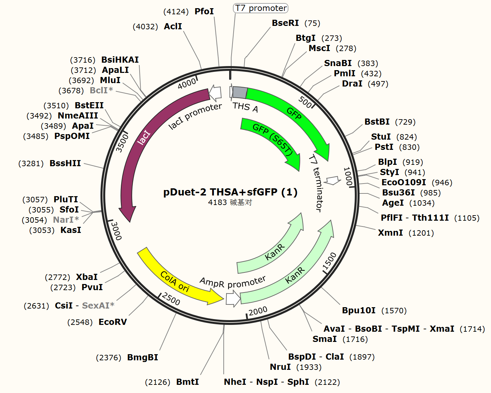
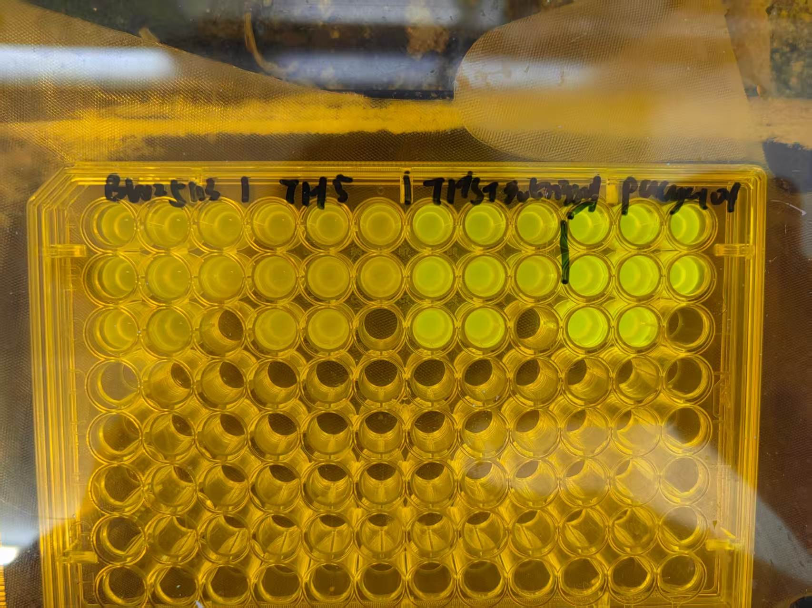
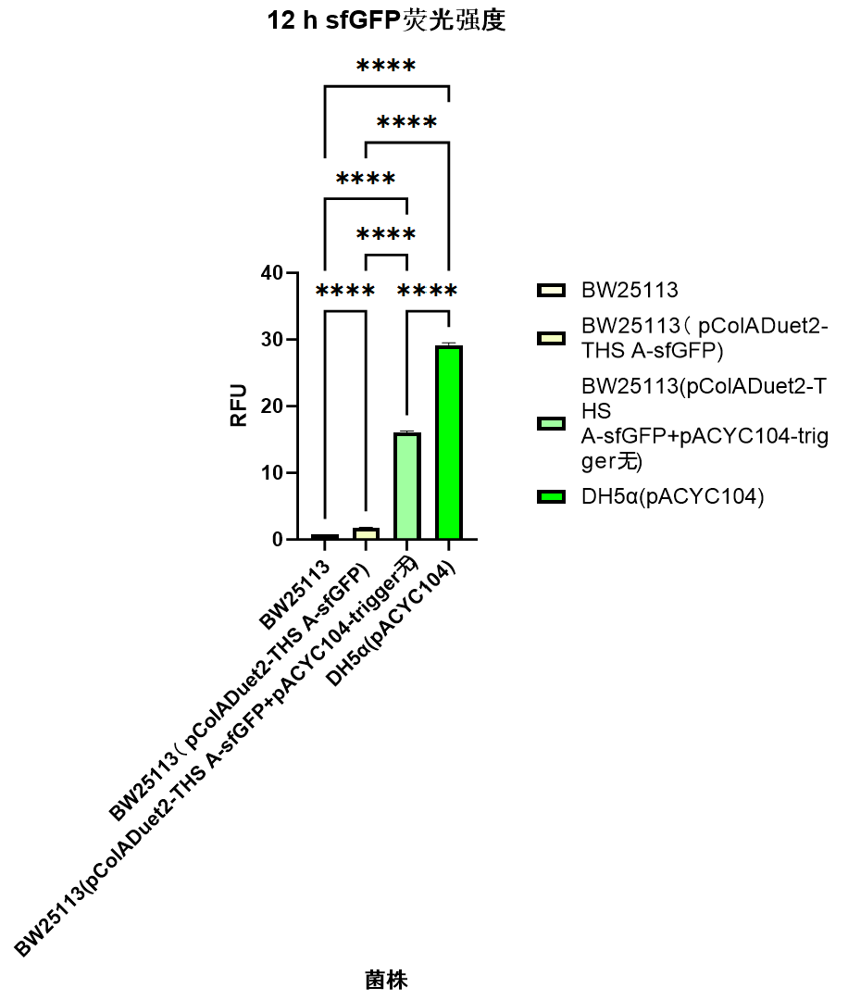
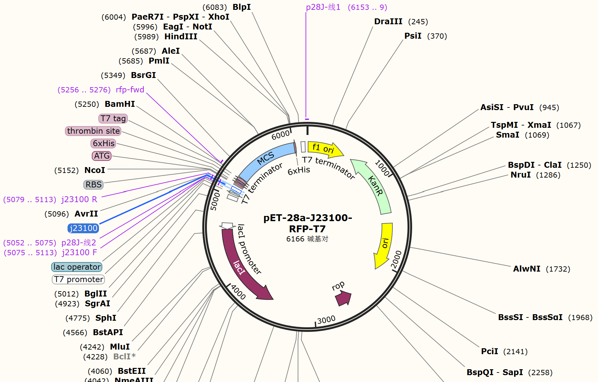
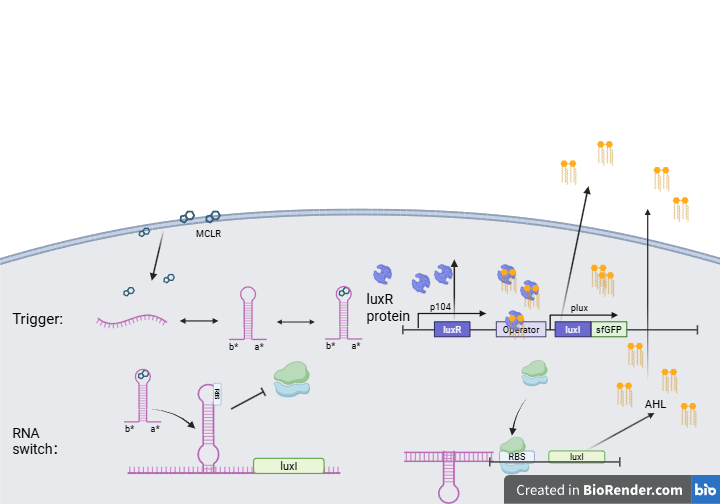
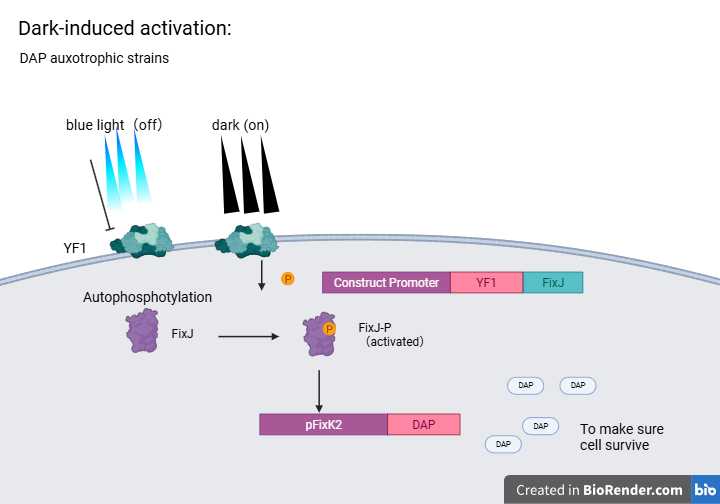

Route A
P_mlrA promoter
A natural inducible promoter route is described through construction of a P_mlrA-sfGFP recombinant plasmid in E. coli DH5α.
Engineering
The engineering page is organized around sensing, normalization, amplification, and biosafety, matching the structure of the supplied project material.
Target sensing
The wet-lab material describes promoter-based sensing and a START riboswitch route. This wiki keeps them as engineering candidates until the team supplies final selection evidence.
Route A
A natural inducible promoter route is described through construction of a P_mlrA-sfGFP recombinant plasmid in E. coli DH5α.
Route B
A second inducible promoter route is described through construction of a P_mcyA/D-sfGFP recombinant plasmid.
Route C
The START system uses an aptamer-linked trigger RNA and a toehold switch to connect MC-LR recognition with sfGFP expression.

Design
The riboswitch design is described as a synthetic trans-acting system. In the off state, the toehold switch sequesters the ribosome-binding site and start codon, suppressing reporter translation.
When the designed trigger is available, it can bind the switch and expose the translation initiation region. The project adapts this logic by placing an MC-LR aptamer core inside an apta-trigger RNA.
Construct
The material names a pColADuet2-based construct carrying a toehold switch and sfGFP reporter.
Construct
The trigger RNA is described under a constitutive promoter, with trigger arms and an aptamer core.
Build
BsaI cloning is shown in the construction workflow for the apta-trigger sequence.
Chassis
The material lists bacterial host strains for testing the response modules.

Testing
Validation material includes fluorescence observation and intensity assay images. The final page should later include raw data, replicate information, normalization, and statistical treatment.
Current generated text reports only the existence of the validation workflow, not a final performance claim.
Internal reference
The source material describes an internal reference module based on TurboRFP. This can reduce ambiguity when cell number, expression state, or culture conditions shift the absolute fluorescence intensity.



Amplification
The supplied material describes LuxI producing AHL, diffusion of AHL, LuxR-AHL activation of Plux, and reporter expression. It also presents a positive-feedback route through luxI.
A final wiki page should separate design rationale from measured amplification performance once complete data are available.

Safety
The biosafety material combines a YF1-FixJ light-regulated switch with a DAP auxotrophy concept. This positions containment as a design requirement, especially because the proposed hardware touches environmental monitoring.
The current page intentionally avoids claiming environmental release readiness. Field deployment would require much deeper safety validation and regulatory review.
Content pending
These items are not available in the current verified materials.